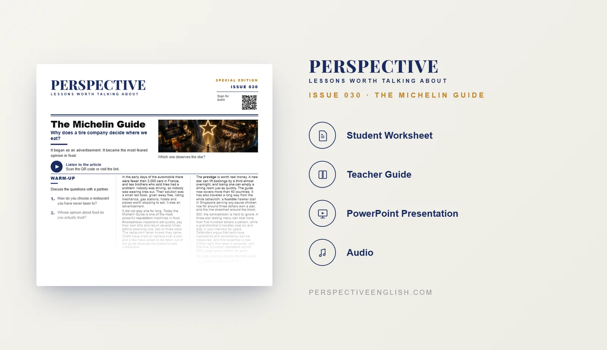

SPECIAL EDITION · ISSUE 030
Michelin Guide ESL Lesson
Who decides what good food is?
A ready-to-teach ESL lesson exploring the Michelin Guide, Michelin stars, restaurant ratings, anonymous inspectors, food culture and fine dining, with reading, listening, vocabulary, discussion and critical-thinking activities for B1–B2 English learners.
CHOOSE YOUR LEVEL
Collection 05 includes Issues 026–030.

LESSON PREVIEW

ABOUT THIS LESSON
About This Michelin Guide ESL Lesson
For more than a century, the Michelin Guide has influenced where people eat and which restaurants are considered among the best in the world. Yet its story began not with chefs, but with a tire company trying to encourage people to drive more.
This B1–B2 Michelin Guide ESL lesson explores how anonymous Michelin inspectors award restaurant stars and how those ratings can transform a restaurant's reputation. Students consider the pressure Michelin stars create for chefs and whether taste, quality and great food can ever be judged objectively.
The lesson combines an original reading and audio with vocabulary, comprehension, discussion questions and critical-thinking activities. Students use English to discuss Michelin stars, restaurant ratings, fine dining, taste, price, prestige, tradition and food culture.
FROM THE ARTICLE
WHAT'S INCLUDED
What's Included in the Michelin Guide Lesson?
- Magazine-style B1–B2 ESL student worksheet
- Original Michelin Guide reading and audio recording
- Five vocabulary items and true-or-false reading comprehension questions
- Five discussion questions about restaurants, reviews, Michelin stars, taste and food culture
- Michelin inspector critical-thinking activity: award five stars across five very different restaurants
- Rank ten criteria for judging great food, from taste and technique to value and cultural tradition
- Language in Context practice with key vocabulary from the article
- Restaurant-owner speaking challenge: respond to winning a first Michelin star
- 150–200 word opinion-writing task: Can anyone really decide what the world’s best food is?
- Teacher guide and complete answer key
- Ready-to-use classroom presentation
GET THE COMPLETE LESSON
Ready to Teach The Michelin Guide?
Get the complete Michelin Guide ESL lesson individually or save with Perspective Collection 05.
Secure checkout and instant digital delivery through Payhip.